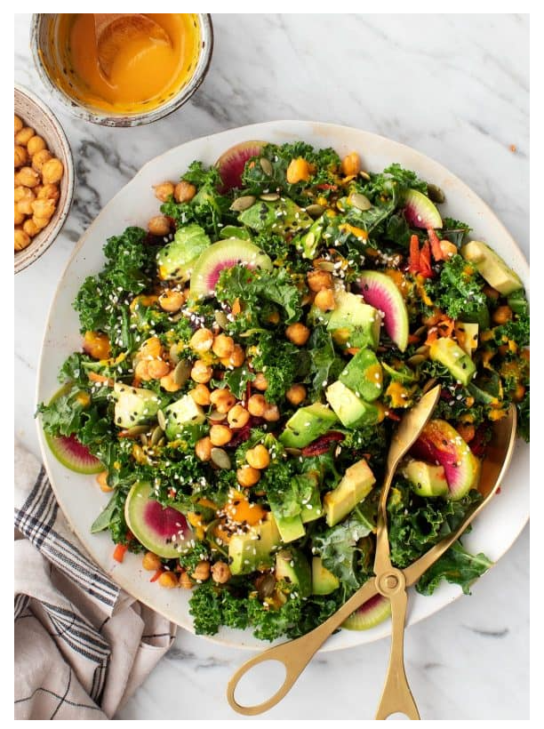

Kale Salad with Carrot Ginger Dressing

Recipe Description
Is it just me, or does it seem like the kale salad has gone out of style?
For a while there, the internet was a kale-crazy place to be, but it seems
to have fallen out of favor due to Brussels sprouts salads, roasted squash
salads, and even pasta salads. While I was pondering this important life
issue, I realized that it had not only been a while since I’d posted a
kale recipe – it had been a while since I’d even made a kale salad for
myself… so I thought – let’s bring it back(!) with this super fresh,
colorful, rainbow salad recipe.
Ingredients
Carrot Ginger Dressing
- ½ cup chopped roasted carrots, from 3/4 cup raw carrots
- 1/3 to ½ cup water
- ¼ cup extra-virgin olive oil
- 2 tablespoons rice vinegar
- 2 teaspoons minced ginger
- ¼ teaspoon sea salt
Kale Salad
- 1 batch Roasted Chickpeas
- 1 bunch curly kale, stems removed, leaves torn
- 1 teaspoon lemon juice
- ½ teaspoon extra-virgin olive oil
- 1 small carrot, grated
- 1 small red beet, grated*
- ½ watermelon radish, very thinly sliced
- 1 avocado, cubed
- 2 tablespoons dried cranberries
- ¼ cup pepitas, toasted
- 1 teaspoon sesame seeds
- Sea salt & Freshly ground black pepper
Instructions
- Make the dressing and roast the chickpeas: Preheat the
oven to 400°F and line a large baking sheet with parchment
paper. Toss the chickpeas with a drizzle of olive oil
and sprinkle with pinches of salt and pepper. Place
the carrot pieces for the dressing in their own corner
on the baking sheet to roast alongside the chickpeas.
Roast for 25 to minutes, or until the chickpeas are
browned and crisp and the carrots are soft. Set
the roasted chickpeas aside. Transfer the carrots
to a blender and add the water, olive oil, rice
vinegar, ginger, and salt. Blend the dressing until
smooth and chill in the fridge until ready to use.
- Place the kale leaves into a large bowl and drizzle
with the lemon juice, ½ teaspoon of olive oil, and
a few pinches of salt. Use your hands to massage
the leaves until they become soft and wilted and
reduce in the bowl by about half.
- Add the carrot, beet, watermelon radish, half of
the cubed avocado, cranberries, pepitas, a few more
good pinches of salt and a few grinds of pepper,
and toss. Drizzle generously with the carrot ginger
dressing. Top with the remaining avocado, more dressing,
the roasted chickpeas and sprinkle with the sesame
seeds. Season to taste and serve.